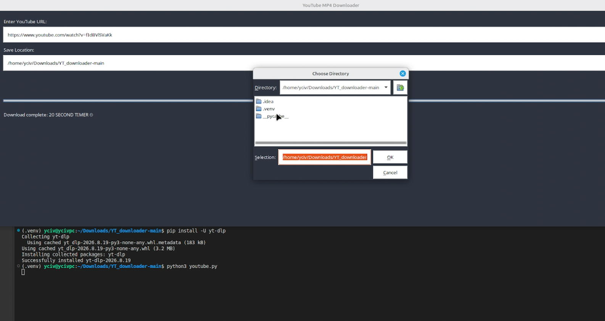

Mp3 URL Converter - Personal Project
A desktop tool in Python, built with Tkinter, to practice object-oriented programming and to make a simple graphical interface.
Source Code
A desktop tool in Python, built with Tkinter, to practice object-oriented programming and to make a simple graphical interface.
Source Code